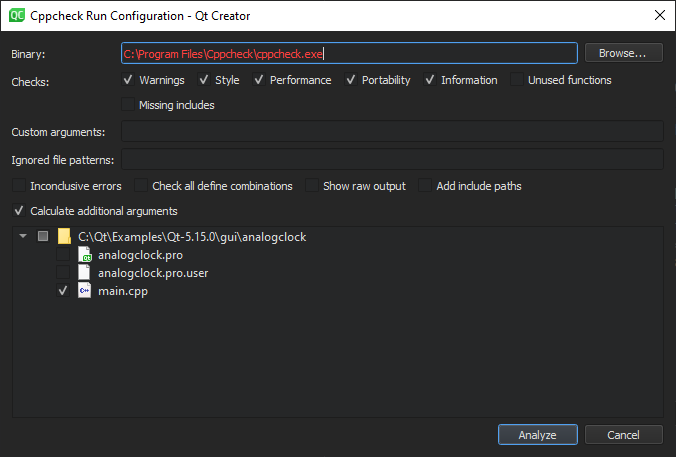

Analyzing Code with Cppcheck
Cppcheck is a static analysis tool that detects errors in C++ code. Static analysis is performed on the source code without actually executing the application.
The experimental Cppcheck Diagnostics plugin integrates diagnostics that are generated by the Cppcheck tool into the C++ editor.
Note: Enable the Cppcheck plugin to use it.
Cppcheck is automatically run on open files. To select the files to check in the currently active project, select Analyze > Cppcheck.
Running Cppcheck on Selected Files
- Select Analyze > Cppcheck.

- In the Binary field, enter the path to the Cppcheck executable file.
- In the Checks group, select the checks to perform.
Note: By default, Cppcheck uses multiple threads to perform checks. Selecting the Unused functions option disables the default behavior.
- In the Custom arguments field, enter additional arguments for running Cppcheck. The arguments might be shadowed by automatically generated ones. To avoid possible conflicts in configuration, select the Show raw output check box to see the final arguments.
- In the Ignored file patterns field, enter a filter for ignoring files that match the pattern (wildcard). You can enter multiple patterns separated by commas. Even though Cppcheck is not run on files that match the patterns, they might be implicitly checked if other files include them.
- Select the Inconclusive errors check box to also mark possible false positives.
- Select the Check all define combinations check box to check all define combinations. Enabling this option can significantly slow down analysis, but might help to find more issues.
- Select the Add include paths check box to pass the current project's include paths to Cppcheck. Enabling this option slows down checks on big projects, but can help Cppcheck to find missing includes.
- Select the Calculate additional arguments check box to calculate additional arguments based on current project's settings (such as the language used and standard version) and pass them to Cppcheck.
- Select the files to run Cppcheck on.
- Select Analyze.
Qt Creator runs Cppcheck on the selected files and displays results via text marks or annotations.
To specify the settings above for the automatically run checks, select Preferences > Analyzer > Cppcheck.
See also Enable and disable plugins.